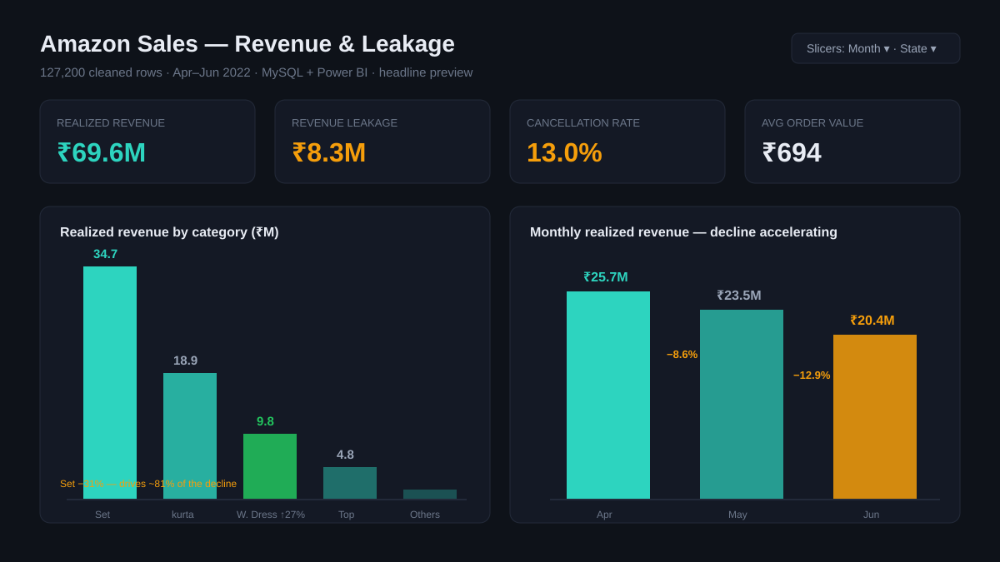
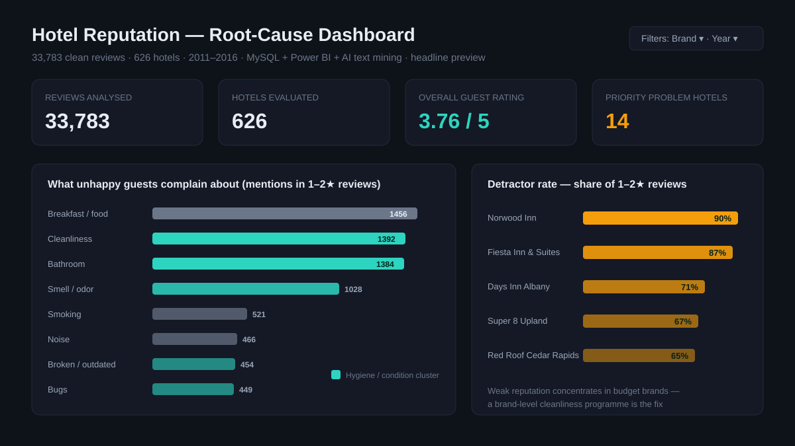
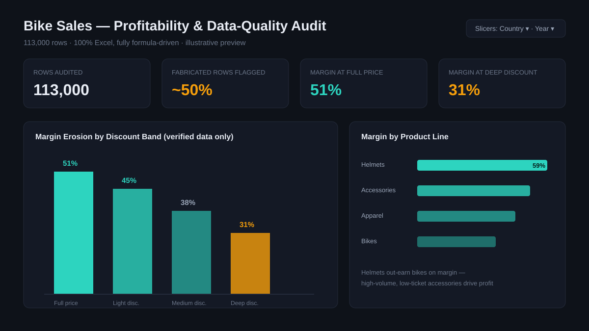

Cairo, Egypt · Open to opportunities
Nour Eldin Khater
Data Analyst
I help businesses make sense of messy data and turn it into decisions they can actually act on. I work mostly in SQL, Excel and Power BI, and my analysis even earned a Certificate of Excellence from the Egyptian Cabinet of Ministers.
From raw data to the decision
It always starts the same way for me: getting clear on what you really need before I touch the data. From there I explore it honestly and clean it up so the numbers can be trusted, then turn it all into visuals and advice anyone can act on.
Data quality first
I always check the data before I trust it. In one project that meant proving almost half of a 113K-row dataset was fabricated before I built a single chart.
Dashboards that answer questions
Interactive Power BI and Excel dashboards built around the real decisions stakeholders face, so they can explore the numbers themselves instead of waiting on a report.
Insight, not just output
I go past the numbers to the "so what" using AI-assisted text mining, root-cause analysis and recommendations written in plain language.
Three projects, three different problems

Amazon Sales Analysis
131K raw rows cleaned and modelled to expose an accelerating revenue decline and ₹8.3M of leakage, right down to the one category behind 81% of the drop.
Read the case study
Hotel Reputation Analysis
33,783 messy reviews across 626 hotels, cleaned up and mined with AI to find the real reason behind the bad ratings: cleanliness and room condition.
Read the case study
Bike Sales Profitability Audit
Proved almost half of a 113K-row dataset was fabricated, then showed how discounting quietly drags margin from 51% down to 31%.
Read the case studyLet's talk data
If you want an analyst who asks the right questions first and tells you honestly what your data can and can't say, I'd love to hear from you. I'm open to data analyst roles and freelance dashboard work.
Contact me